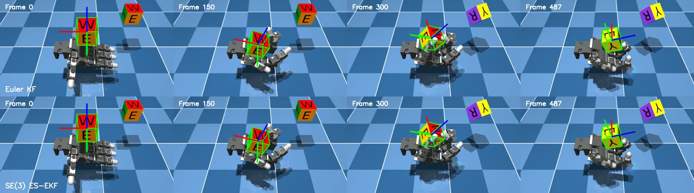
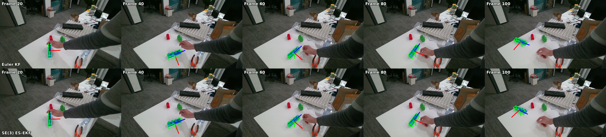
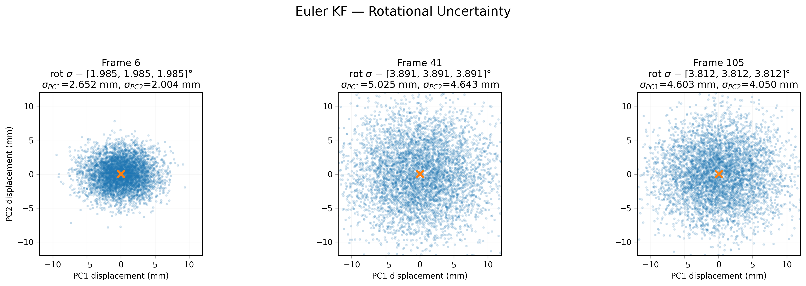
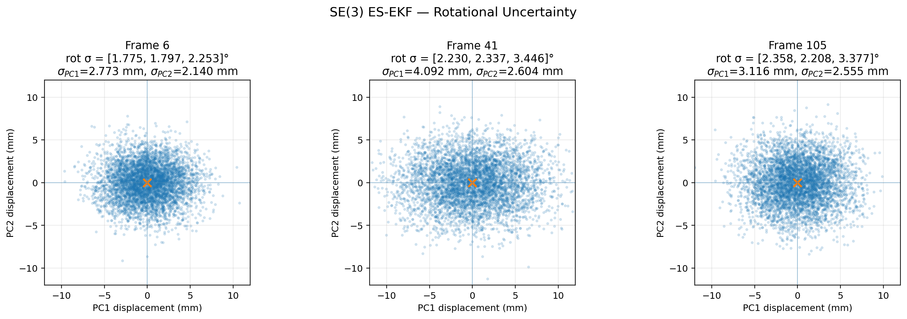
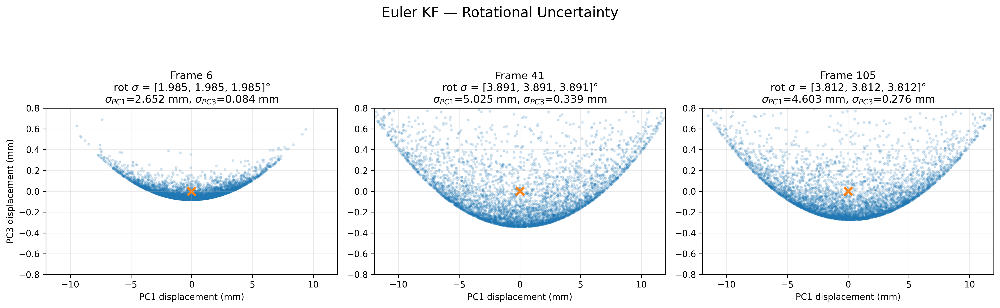
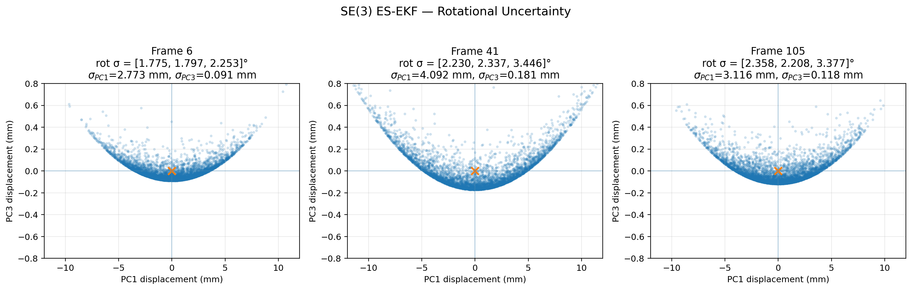
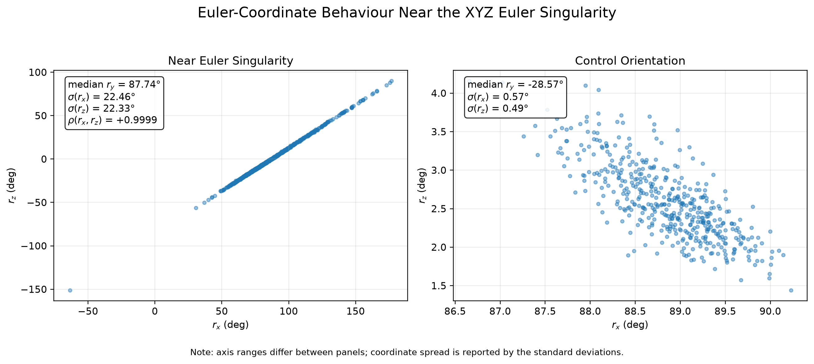

Real-Time 6D Object Pose Tracking
Online tracking with the proposed \(SE(3)\) ES-EKF using a ZED RGB-D camera.
Abstract
FoundationPose++ improves 6D object pose tracking by combining FoundationPose with Kalman-filter-based temporal prediction and an additional 2D tracker. Its original filter represents orientation using XYZ Euler angles and performs prediction and correction directly in Euclidean coordinates. This project reformulates the temporal filtering component as an error-state Extended Kalman Filter on \(SE(3)\), keeping the nominal rigid-body pose on the group while representing local pose errors and corrections in the tangent space.
Under smooth simulated motion, the Euler-angle KF and the proposed \(SE(3)\) ES-EKF achieve nearly identical pose accuracy. Targeted real-world stress tests, however, expose representation-specific limitations of the Euler formulation: continuous rotations across the \(\pm180^\circ\) branch boundary produce near-\(360^\circ\) coordinate residuals, while poses approaching the XYZ Euler \(\pm90^\circ\) middle-angle singularity produce strongly coupled rotational coordinates that propagate into the filter innovation and state. The \(SE(3)\) formulation instead represents rotational discrepancies as local group-consistent errors, avoiding these Euler-coordinate discontinuities and singularities.
Repeated real-time RGB-D trials further demonstrate sustained operation of the complete \(SE(3)\) pipeline at approximately \(30\) FPS. The contribution is therefore a geometrically consistent and representation-robust formulation of rigid-body pose filtering rather than a universal improvement in pose accuracy.
Motivation
FoundationPose++ introduces temporal motion prediction through a Kalman filter, but represents the 6D object pose using translation and XYZ Euler angles in a Euclidean state vector. While this representation is simple and effective for moderate motion, rotations do not naturally form a Euclidean vector space.
In particular, Euler-angle coordinates can exhibit discontinuities and singular configurations. For example, two orientations represented by \(179^\circ\) and \(-179^\circ\) are physically only about \(2^\circ\) apart, while direct subtraction of their Euler coordinates gives a difference close to \(358^\circ\). Similarly, for XYZ Euler angles, configurations with pitch approaching \(\pm 90^\circ\) become singular, making the coordinate representation highly sensitive to small physical changes in orientation.
These are representation effects rather than failures of the underlying rigid-body motion. A rigid-body pose naturally belongs to the Lie group \(SE(3)\), suggesting that the nominal pose should remain on the group instead of being represented and corrected directly through Euler coordinates.
Method
FoundationPose++
FoundationPose++ combines FoundationPose with Kalman-filter-based temporal motion prediction and an additional 2D tracker. Its per-frame tracking pipeline is preserved in this project.
The original Kalman filter uses the Euclidean state \[ \mathbf{x}_k = \begin{bmatrix} \mathbf{p}_k & \boldsymbol{\theta}_k & \mathbf{v}_k & \dot{\boldsymbol{\theta}}_k \end{bmatrix}^{T} \in \mathbb{R}^{12}, \] where \(\boldsymbol{\theta}_k\) denotes XYZ Euler angles.
\(SE(3)\) Error-State EKF
The nominal rigid-body pose remains on \(SE(3)\), while the EKF estimates only local errors in the tangent space. A left-multiplicative pose-error convention is used for correction.
Pose Residual
The relative pose between the FoundationPose observation and the predicted pose is mapped to a local residual:
EKF Update
The local residual is used to compute the Kalman gain and estimate the error-state correction. Here, \(\delta\hat{\boldsymbol{\xi}}_k\) denotes the 6D pose-error component of the full error-state correction \(\delta\hat{\mathbf{x}}_k\):
\(SE(3)\) Injection
The estimated pose-error component is mapped back to the group and injected into the nominal pose:
Prediction
The corrected pose and covariance are propagated to the next frame using a constant-spatial-velocity model. The spatial motion vector \(\mathbf{u}_k=[\mathbf{v}_k^T,\boldsymbol{\omega}_k^T]^T\) contains the linear and angular velocities expressed in the camera/world frame:
Experiments
Experiment I — Simulation with Ground Truth
A dexterous robotic hand manipulates a cube in MuJoCo while a fixed RGB-D camera records 504 frames. Ground-truth object poses are available for every frame.

Euler-angle KF
SE(3) ES-EKF
Full-sequence qualitative comparison in Experiment I. Left: Euler-angle KF. Right: SE(3) ES-EKF.
Translation
| Method | MAE | RMSE | Max |
|---|---|---|---|
| Euler KF | 0.390 | 0.423 | 0.869 |
| SE(3) ES-EKF | 0.389 | 0.422 | 0.879 |
Values in mm.
Rotation
| Method | MAE | RMSE | Max |
|---|---|---|---|
| Euler KF | 0.702 | 0.734 | 1.566 |
| SE(3) ES-EKF | 0.703 | 0.735 | 1.561 |
Values in degrees.
ADD
| Method | Mean | RMSE | Max |
|---|---|---|---|
| Euler KF | 0.570 | 0.594 | 1.021 |
| SE(3) ES-EKF | 0.569 | 0.593 | 1.023 |
5000 sampled mesh points; values in mm.
Result: both filters achieve nearly identical quantitative accuracy under the relatively smooth motion in this experiment.
Experiment II — Offline RGB-D Tracking
A 116-frame RGB-D sequence of a textured LEGO block is used to evaluate tracking under faster motion and larger inter-frame pose changes than in Experiment I. Because ground-truth poses are unavailable for this sequence, the comparison focuses on qualitative tracking behaviour and the evolution of the estimated uncertainty.

Tracking and Estimated Uncertainty
Euler-angle KF
SE(3) ES-EKF
How the visualization is generated. At each frame, rotational perturbations are sampled from the rotational covariance of the corresponding filter and applied to a fixed point on the object mesh. The resulting 3D displacements form the point cloud shown on the right. As the estimated rotational covariance evolves over time, the spread and shape of the displacement cloud change accordingly. A wider cloud therefore represents a larger range of spatial displacement induced at the selected mesh point by the estimated rotational uncertainty.
Interpretation of uncertainty. The Euler-angle KF and the \(SE(3)\) ES-EKF express rotational uncertainty in their own native coordinates. These visualizations are therefore used to examine the temporal evolution of uncertainty within each estimator, rather than for direct numerical comparison between the two covariance representations. In this sequence, pronounced object disturbances occur around Frames 31 and 88. The videos show the continuous uncertainty response around these events, while Frames 6, 41, and 105 below provide representative snapshots before and after the disturbances.
Spatial Uncertainty Evolution — PC1 / PC2
To examine how rotational uncertainty maps to spatial displacement on the object, three representative stages are selected: Frame 6 before the pronounced disturbances, Frame 41 after the first disturbance around Frame 31, and Frame 105 after the second disturbance around Frame 88. These frames provide snapshots of the estimated spatial uncertainty at different stages of the sequence.
Euler-angle KF

SE(3) ES-EKF

Spatial Uncertainty Evolution — PC1 / PC3
Euler-angle KF

SE(3) ES-EKF

The rotational uncertainty of each filter is sampled and propagated to the displacement of a fixed point on the object mesh. PCA is then applied to the resulting 3D displacement samples. The PC1–PC2 view shows the dominant spatial spread, while PC1–PC3 reveals the much smaller out-of-plane component. Because a point undergoing rigid-body rotation follows a curved trajectory, the mapped displacement samples can form a thin curved sheet rather than a Gaussian ellipse.
Result: Experiment II provides a qualitative comparison of tracking behaviour and the evolution of rotational and spatial uncertainty for the Euler-angle KF and the SE(3) ES-EKF under faster motion and larger inter-frame pose changes.
Experiment III — Real-Time Real-World Tracking
The real-world experiments use a ZED RGB-D camera with OSTrack as the additional 2D measurement source. They first evaluate repeated real-time \(SE(3)\) ES-EKF tracking with two objects, a mustard bottle and a banana, and then compare the behaviour of the Euler-angle KF and the \(SE(3)\) ES-EKF under targeted rotational conditions.
A. Repeated Real-Time Tracking
The proposed \(SE(3)\) ES-EKF was evaluated through repeated real-time RGB-D tracking runs using two objects: a mustard bottle and a banana. Three approximately two-minute real-time tracking videos were recorded for each object, giving six trials of comparable duration. These trials evaluate the sustained online operation of the complete \(SE(3)\) tracking pipeline under ordinary manual object motion.
Mustard Bottle
Representative \(SE(3)\) ES-EKF real-time tracking trial.
Banana
Representative \(SE(3)\) ES-EKF real-time tracking trial.
Repeated Real-Time Runtime Summary
| Runtime statistic | Mustard bottle | Banana | Overall |
|---|---|---|---|
| Trials | 3 | 3 | 6 |
| Frames | 10,539 | 10,570 | 21,109 |
| Mean frame time | 34.13 ms | 34.03 ms | 34.08 ms |
| Mean FPS | 29.30 | 29.39 | 29.35 |
| FoundationPose | 16.071 ms (47.09%) | 16.023 ms (47.09%) | 16.047 ms (47.09%) |
| 2D tracker (OSTrack) | 9.399 ms (27.54%) | 9.393 ms (27.60%) | 9.396 ms (27.57%) |
| \(SE(3)\) EKF update | 0.534 ms (1.56%) | 0.533 ms (1.57%) | 0.534 ms (1.57%) |
| \(SE(3)\) prediction | 0.439 ms (1.29%) | 0.440 ms (1.29%) | 0.440 ms (1.29%) |
| \(SE(3)\) filtering total | 0.973 ms (2.85%) | 0.974 ms (2.86%) | 0.973 ms (2.86%) |
Runtime was highly consistent across the two objects. Across all \(21{,}109\) frames, the complete pipeline achieved a mean end-to-end rate of \(29.35\) FPS. FoundationPose and OSTrack accounted for most of the per-frame computation, while the \(SE(3)\) EKF update and prediction together required only \(0.973\) ms per frame, corresponding to \(2.86\%\) of the mean frame time.
Result: Across six approximately two-minute real-time tracking trials involving two different objects, the proposed \(SE(3)\) ES-EKF pipeline sustained approximately \(29.3\) FPS. Most of the per-frame computation was spent on FoundationPose and the 2D tracker (OSTrack), while the \(SE(3)\) filtering operations accounted for only \(2.86\%\) of the mean frame time.
B. Continuous Multi-Turn Rotation across the Euler Branch Boundary
The object was rotated continuously in one direction for approximately two complete turns. Separate recordings were collected for the original Euler-angle KF and the proposed \(SE(3)\) ES-EKF. The recordings are therefore independent trials rather than frame-synchronized executions of identical motion.
Euler-angle KF
Two-turn Euler-angle KF trial with two branch-boundary crossings.
The tracking video is synchronized with the Euler \(r_z\) trajectory. During the continuous two-turn rotation, two branch-crossing events are observed as the Euler representation passes the \(\pm180^\circ\) boundary.
Here, \(r_z\) denotes the third component of the XYZ Euler-angle representation \((r_x,r_y,r_z)\) of the object orientation \(^{C}\mathbf{R}_{O}\) with respect to the camera frame. It is a wrapped orientation coordinate, not the accumulated physical rotation angle of the object. Therefore, even though the object rotates continuously through multiple complete turns, \(r_z\) remains on its selected Euler branch and can repeatedly switch between values near \(+180^\circ\) and \(-180^\circ\).
In the independent \(SE(3)\) ES-EKF trial, no corresponding branch-boundary discontinuity was observed, since the orientation was not represented by wrapped Euler-angle coordinates.
\(SE(3)\) ES-EKF
Independent two-turn trial using the \(SE(3)\) error-state formulation.
Why does the Euler branch crossing matter?
The orientation of the object is represented by \(^{C}\mathbf{R}_{O}\), and the original filter converts this rotation matrix to XYZ Euler coordinates \((r_x,r_y,r_z)\). During continuous rotation, the third Euler component can cross its representation boundary even though the physical orientation remains continuous. At the first detected crossing, the predicted and observed coordinates were
The observed value is an equivalent wrapped representation: \(-178.28^\circ \equiv 181.72^\circ\). Thus, the underlying orientation continues smoothly across the boundary. However, the original linear Kalman filter treats the Euler coordinates as ordinary Euclidean variables and computes the innovation by direct subtraction:
The resulting large residual is therefore a coordinate artifact rather than a physical \(357.99^\circ\) inter-frame rotation.
Effect on the Kalman correction
In the original Euler-angle KF, this innovation is not only a diagnostic quantity; it directly enters the state correction through
\[ \hat{\mathbf{x}}_{k|k} = \hat{\mathbf{x}}_{k|k-1} + \mathbf{K}_k\mathbf{y}_k . \]
Therefore, a near-\(360^\circ\) Euler residual can produce a large correction to the rotational state, depending on the corresponding Kalman gain. The final output pose does not undergo the full \(360^\circ\) change because the innovation is weighted by \(\mathbf{K}_k\), and the corrected pose is subsequently processed by the pose-refinement stage. Nevertheless, the detected branch-crossing frames coincide with pronounced transient changes in the final estimated orientation.
In contrast, the \(SE(3)\) formulation compares orientations through the local relative rotation,
so the rotational innovation is expressed locally on the Lie algebra rather than by directly subtracting Euler-angle coordinates.
Rotational Innovation
The innovation statistics further expose the effect of the Euler branch boundary. The Euler-angle KF computes the rotational residual by direct subtraction of XYZ Euler coordinates, whereas the \(SE(3)\) ES-EKF represents the rotational innovation locally in \(\mathfrak{so}(3)\).
| Rotational innovation | Euler-angle KF | \(SE(3)\) ES-EKF |
|---|---|---|
| Median | 1.386° | 2.000° |
| Mean | 4.740° | 2.502° |
| 95th percentile | 6.959° | 6.619° |
| 99th percentile | 72.969° | 9.402° |
| Maximum | 361.191° | 11.275° |
The two columns use their respective filter innovation definitions and come from independent two-turn recordings. The ordinary innovation magnitudes should therefore not be interpreted as a synchronized accuracy comparison. The important observation is the appearance of near-\(360^\circ\) residuals specifically at the Euler representation boundary.
Detected Euler Branch-Crossing Events
| Event | Frame | \(r_z\) innovation | Output-pose change |
|---|---|---|---|
| Branch crossing 1 | 174 | −357.984° | 34.711° (174→175) |
| Following frame | 175 | — | 32.285° (175→176) |
| Branch crossing 2 | 314 | −361.191° | 24.623° (314→315) |
| Following frame | 315 | — | 21.624° (315→316) |
The two detected branch crossings coincide with the largest frame-to-frame orientation changes in the Euler trial. This links the representation discontinuity and its artificial innovation to transient disturbances in the final estimated orientation.
Output-Pose Continuity
The final tracking rotations are also evaluated using the same representation-independent \(SO(3)\) geodesic measure for both filters:
| Frame-to-frame orientation change | Euler-angle KF | \(SE(3)\) ES-EKF |
|---|---|---|
| Median | 1.388° | 1.586° |
| Mean | 2.457° | 2.361° |
| 90th percentile | 5.641° | 5.491° |
| 95th percentile | 7.337° | 6.711° |
| 99th percentile | 14.229° | 10.099° |
| Maximum | 34.711° | 11.339° |
Typical frame-to-frame motion is similar in the two independent recordings: the medians are \(1.388^\circ\) and \(1.586^\circ\), respectively. The main difference appears in the extreme values. In the Euler trial, the largest four orientation changes occur around the two detected branch-crossing events, whereas the maximum observed change in the independent \(SE(3)\) trial is \(11.339^\circ\).
Result: the continuous-rotation experiment shows that an Euler-coordinate branch crossing can generate an artificial near-\(360^\circ\) innovation in the original linear KF. The crossing events coincide with transient disturbances in the final estimated orientation, although downstream pose refinement recovers tracking in this trial. The \(SE(3)\) error-state formulation avoids performing this correction by direct subtraction of wrapped Euler coordinates.
Repeated Multi-Turn Trials
To examine whether the branch-crossing behaviour observed in the two-turn sequence was repeatable, the experiment was repeated with three and four continuous unidirectional turns. Euler branch-crossing events were detected when the absolute \(r_z\) innovation exceeded \(180^\circ\). For each detected crossing at frame \(k\), the crossing-associated output-pose change is defined as the maximum of the two subsequent frame-to-frame \(SO(3)\) changes,
| Trial | Detected Euler crossings | Max \(|r_z|\) innovation | Euler median \(\Delta\theta\) | Max crossing-associated \(\Delta\theta\) | \(SE(3)\) max innovation |
|---|---|---|---|---|---|
| 2 turns | 2 | 361.19° | 1.39° | 34.71° | 11.28° |
| 3 turns | 3 | 349.72° | 2.01° | 42.63° | 14.40° |
| 4 turns | 4 | 360.30° | 1.98° | 30.80° | 13.31° |
Across the two-, three-, and four-turn Euler trials, nine branch-crossing events were detected in total. The repeated trials reproduced the large wrapped Euler residuals observed in the two-turn case, with maximum \(|r_z|\) innovations between \(349.72^\circ\) and \(361.19^\circ\). Pronounced output-pose transients were also observed around the crossing events.
In the independent \(SE(3)\) trials, the maximum local rotational innovations remained between \(11.28^\circ\) and \(14.40^\circ\), without an analogous near-\(360^\circ\) Euler branch-cut residual. Because the Euler and \(SE(3)\) sequences were recorded independently, these magnitudes are used to characterize the behaviour of each representation rather than as a frame-synchronized accuracy comparison.
C. Near-\(90^\circ\) Euler Singularity
A second real-world stress test examines the XYZ Euler singularity that occurs as the middle XYZ Euler coordinate \(r_y\) approaches \(\pm90^\circ\). Two complementary tests are used. First, dynamic trials move the object through the near-singular region to examine tracking behaviour. Second, a controlled stationary-object trial isolates how the Euler-coordinate representation affects the internal Kalman-filter quantities.
Why does the near-\(90^\circ\) configuration matter?
In the XYZ Euler representation, the parameterization becomes singular as the middle XYZ Euler coordinate \(r_y\) approaches \(\pm90^\circ\), where \(\cos(r_y)\) approaches zero. Near this configuration, the two outer Euler coordinates \(r_x\) and \(r_z\) become strongly coupled and are no longer independently well-conditioned. Consequently, a small and smooth change in the physical orientation can produce large, coupled changes in the Euler-coordinate representation.
Dynamic Near-Singularity Stress Test
Four dynamic trials were recorded with the Euler-angle KF while the object orientation passed through a near-singular configuration. All four recordings subsequently exhibited tracking loss. Two independent \(SE(3)\) ES-EKF stress-test recordings maintained tracking. Because these recordings are independent rather than frame-synchronized executions of identical motion, the numerical values below characterize the observed behaviour of each formulation rather than constitute a paired accuracy benchmark.
Euler-angle KF — Representative Dynamic Trial
Euler Trial 1. The closest measured approach to the singular configuration occurs at frame 185, where \(r_y=-88.48^\circ\). The maximum rotational innovation (\(311.65^\circ\)) also occurs at frame 185, followed by a \(74.68^\circ\) output-pose change from frame 185 to 186.
\(SE(3)\) ES-EKF — Representative Dynamic Trial
Independent \(SE(3)\) near-singularity stress-test recording. Tracking is maintained throughout this sequence.
Dynamic-Trial Summary
| Formulation | Trials | Tracking outcome | Max rotational innovation | Max output-pose \(\Delta\theta\) |
|---|---|---|---|---|
| Euler-angle KF | 4 | Lost in 4 / 4 trials | 263.56°–449.90° | 74.68°–106.73° |
| \(SE(3)\) ES-EKF | 2 | Maintained in 2 / 2 trials | 16.63°–18.33° | 15.63°–16.04° |
The four Euler trials approached the singular region with the closest measured \(|r_y|\) between \(88.18^\circ\) and \(89.73^\circ\). Large Euler-coordinate innovations and large output-orientation transients were observed in every trial. The largest transient was not always temporally coincident with the closest measured approach to \(90^\circ\); therefore, these recordings are interpreted as near-singularity stress tests rather than evidence that crossing a particular numerical threshold deterministically causes tracking loss.
Controlled Near-Singularity Diagnostic
To separate representation effects from rapid physical motion, an additional sequence holds the object approximately stationary with the measured middle XYZ Euler coordinate close to the singular configuration. A control sequence holds the object at an orientation farther from the singularity.

These values describe variation of the XYZ Euler coordinates; they do not mean that the physical object orientation itself oscillates by \(22^\circ\). The purpose of the diagnostic is to expose the poor conditioning of the Euler parameterization near its singular configuration.
Propagation through the Euler-Angle KF
The coordinate effect is not confined to the converted FoundationPose measurement. Because the original linear KF predicts and corrects the Euler coordinates directly, the near-singular behaviour propagates into the filter prediction, innovation, corrected state, and angular-velocity state.
| Filter quantity | Near \(90^\circ\) | Control orientation |
|---|---|---|
| Measurement \(\sigma(r_x)\ /\ \sigma(r_z)\) | 22.46° / 22.33° | 0.57° / 0.49° |
| Predicted state \(\sigma(r_x)\ /\ \sigma(r_z)\) | 31.48° / 31.33° | 0.69° / 0.61° |
| Median rotational innovation | 24.44° | 0.87° |
| 95th-percentile rotational innovation | 97.84° | 1.95° |
| Corrected state \(\sigma(r_x)\ /\ \sigma(r_z)\) | 21.68° / 21.56° | 0.55° / 0.46° |
| Angular-velocity state \(\sigma(\dot r_x)\ /\ \sigma(\dot r_z)\) | 10.74° / 10.69° per frame | 0.19° / 0.19° per frame |
In particular, the standard deviation of the predicted \(r_x\) and \(r_z\) coordinates increases to approximately \(31^\circ\), while the angular-velocity states reach standard deviations of approximately \(10.7^\circ\) per frame. The latter quantities are part of the KF motion state and are reused by the next prediction step. This shows that the Euler-coordinate sensitivity can propagate beyond the current measurement and correction into subsequent motion prediction.
Comparison with the \(SE(3)\) Error-State Formulation
A component-wise comparison of \(r_x\), \(r_y\), and \(r_z\) is not appropriate for the \(SE(3)\) ES-EKF because its rotational error state is not an XYZ Euler-angle state. Instead, the common quantity of interest is the local rotational discrepancy between the predicted and observed orientations. The \(SE(3)\) ES-EKF computes
| Static near-\(90^\circ\) diagnostic | Euler-angle KF | \(SE(3)\) ES-EKF |
|---|---|---|
| Median rotational innovation | 24.44° | 0.89° |
| 95th percentile | 97.84° | 2.07° |
| Maximum | 266.87° | 3.05° |
| Median output-pose \(SO(3)\) change | 1.14° | 0.72° |
| Maximum output-pose \(SO(3)\) change | 5.49° | 2.52° |
The Euler and \(SE(3)\) static recordings are independent sequences. The innovation values also follow the respective residual definitions of the two filters. They are therefore used here to characterize how each formulation behaves in the same near-singularity regime, rather than as frame-by-frame error measurements.
Result: the controlled experiment shows that the near-\(90^\circ\) Euler singularity produces large, strongly coupled coordinate variation that propagates into the Euler KF innovation, corrected state, angular-velocity state, and subsequent prediction. In the independent \(SE(3)\) recording, the rotational innovation remains a small local Lie-algebra discrepancy. The dynamic trials further show that the Euler recordings can exhibit very large rotational residuals and output-pose transients in this regime, whereas tracking was maintained in the tested \(SE(3)\) sequences.
Main Finding
- Comparable accuracy under smooth motion. With ground truth available in simulation, the Euler-angle KF and the proposed \(SE(3)\) ES-EKF achieve nearly identical pose accuracy.
- Euler branch-boundary effect. At the \(\pm180^\circ\) Euler branch boundary, the Euler-angle KF can produce artificial near-\(360^\circ\) coordinate residuals even though the physical orientation remains continuous.
- Near-singularity behaviour. As the middle XYZ Euler coordinate \(r_y\) approaches \(\pm90^\circ\), strongly coupled Euler-coordinate variation can propagate through the innovation, corrected state, angular-velocity state, and subsequent prediction.
- Benefit of the \(SE(3)\) formulation. The \(SE(3)\) ES-EKF represents rotational disagreement as a local Lie-algebra error, avoiding direct subtraction of wrapped or near-singular Euler coordinates. Its main benefit is therefore geometric consistency and representation robustness rather than a universal reduction in tracking error.
Limitations & Future Work
- Accurate ground-truth poses are available only in simulation. The offline LEGO and real-world ZED experiments therefore rely primarily on qualitative tracking behaviour and internal filter diagnostics.
- The real-world stress tests contain a limited number of objects, sequences, and independently recorded trials. They characterize the observed behaviour of the two formulations but do not constitute a frame-synchronized accuracy benchmark.
- The near-singularity experiments isolate effects associated with the pose representation, but tracking failure in the complete vision pipeline can also depend on image quality, occlusion, object motion, depth measurements, and FoundationPose estimation errors.
- Future work should include externally measured real-world ground truth, synchronized repeated trajectories, and a broader range of objects and motion conditions.